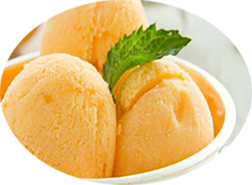

Sorbet à l’abricot

Pour 5 personnes
Préparation : 15 mn
Repos 4h
Ingrédients:
- 1 kg d'abricots
- 100 g de sucre
- 350 ml d'eau
- 1 jus de citron
Recette
- Compotez les abricots avec 200 ml d'eau, le sucre et le jus de citron dans une casserole sur le feu.
- Mixez la compotée avec les 150 ml d'eau restante dans un blender.
- Versez le tout dans un bac à glace.
- Placez au congélateur.
- Remuez 4 fois le sorbet toutes les deux heures, à l'aide d'une cuillère.
- Réservez au congélateur jusqu'au service.
|